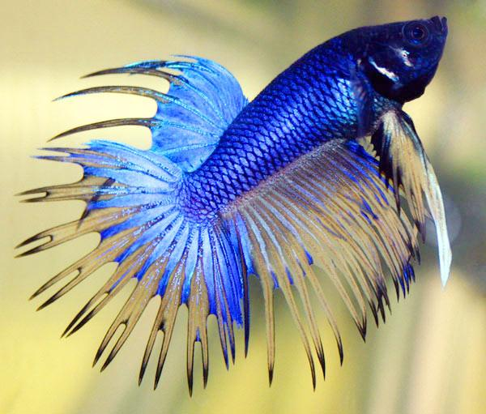
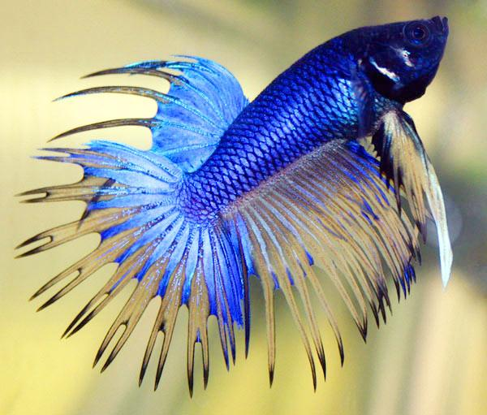

Cīnītājzivtiņu jeb gailīšu dzimtene ir Dienvidaustrumāzija, tie dzīvo siltās, stāvošās vai lēni tekošās saldūdens krātuvēs, un visbiežāk tie sastopami Taizemē, Vjetnamā un Indonēzijas salās. Akvārijos sastopamās šo zivju formas izveidotas selekcijas ceļā un atšķiras ar spilgtām, dažādām krāsām un spuru atvērumiem. “Gailītis ir viena no populārākajām akvārija zivtiņām visā pasaulē tā košās ārienes, interesantās uzvedības, kā vienkāršo turēšanas apstākļu dēļ. Gailīšu dzīves ilgums ir aptuveni trīs gadi.
 
